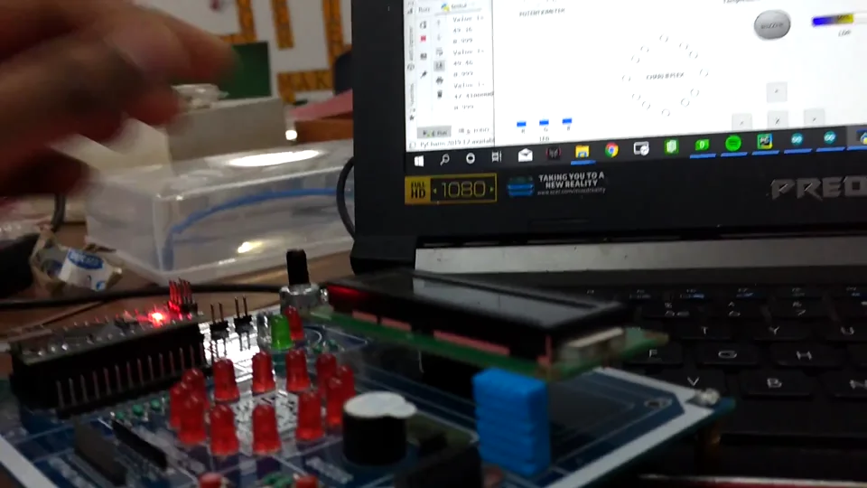
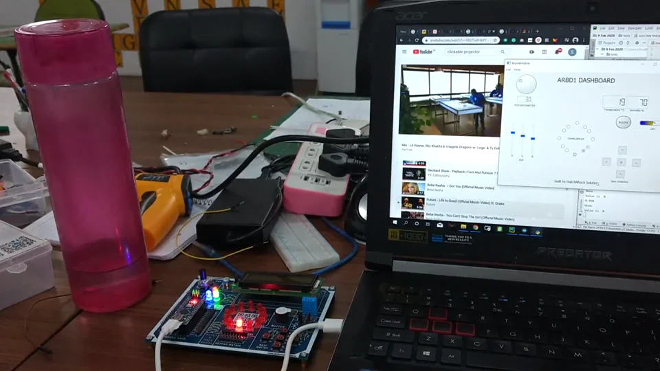
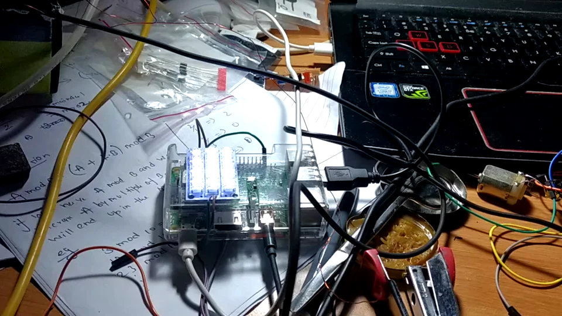
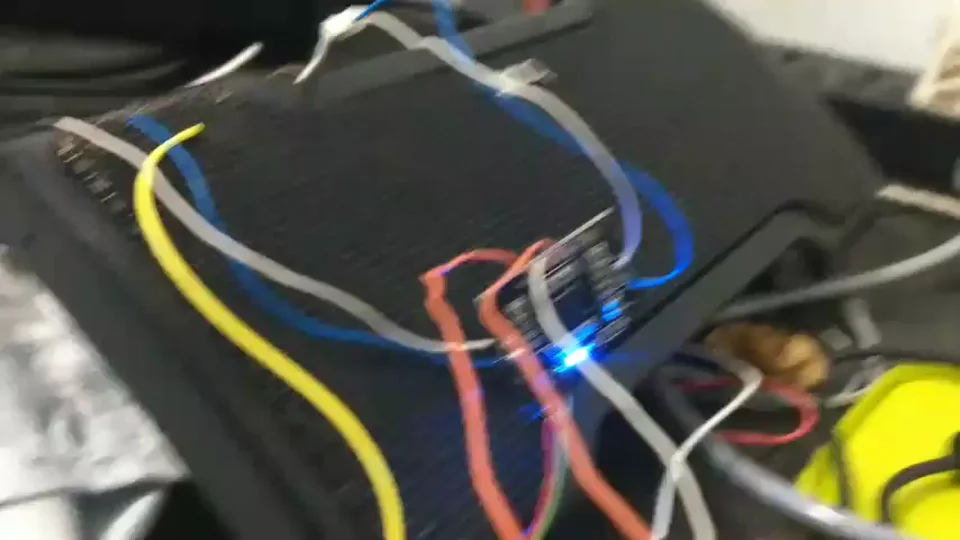
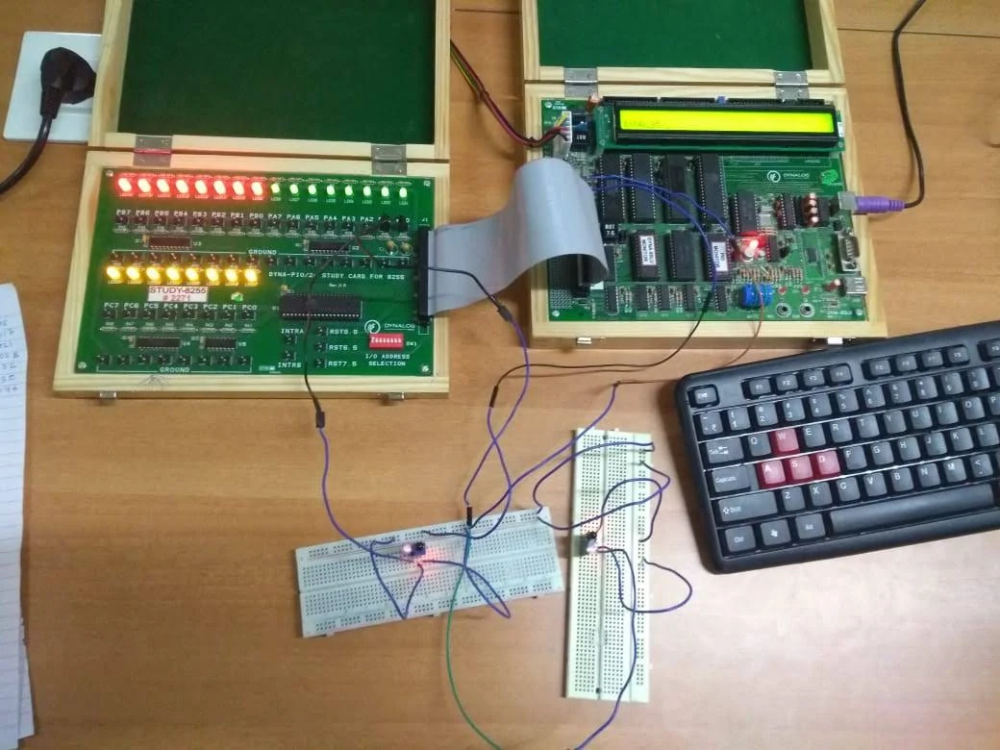
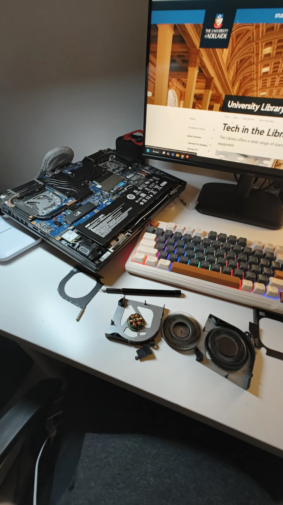

VIDEO / 0:28
VIDEO / 0:28ARBD1 dashboard in action
A bench recording of the ARBD1 board alongside its desktop dashboard, showing sensor readings and controls.
HANDS-ON PROJECTS
A little less theory. A few more wires. These are real recordings and photos from my hardware projects and experiments.
VIDEO / 0:28A bench recording of the ARBD1 board alongside its desktop dashboard, showing sensor readings and controls.

VIDEO / 0:14A hands-on demonstration with the board and the companion interface visible together.

VIDEO / 0:17Another view of the connected board and desktop interface during a bench session.

VIDEO / 0:34A Raspberry Pi voice assistant answering arithmetic and calculus questions before switching to audio playback.
 VIDEO / 0:30
VIDEO / 0:30A second recording with an arithmetic question, a request for a song, and a closer look at the board and speaker.

VIDEO / 0:09A short look at a DIY speaker build, with the speaker, wiring, and electronics laid out on the bench.

PHOTOMicroprocessor trainer boards, breadboards, LEDs, and a keyboard connected on the workbench.

PHOTOAn opened laptop and its cooling components laid out for a closer look at the hardware.
Six recordings. Two photos. A few things I learned by making them.